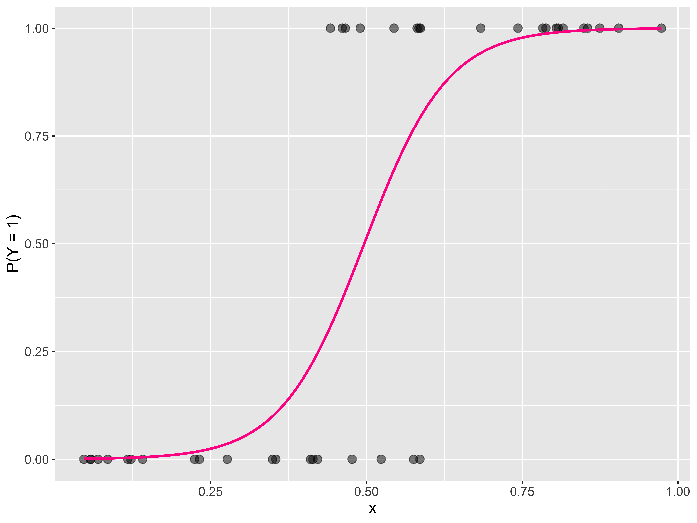

Logistic Regression + Classification Trees
Kelly McConville
DATA 100
Week 13 | Spring 2026
Announcements
- Don’t forget to get your data science activity credit.
Goals for Today
- Logistic Regression
- Classification Trees
- Installing R and RStudio on your computer
Models for Categorical Response Variables
Logistic Regression
Response variable: A categorical variable with two categories
\[\begin{align*} Y = \left\{ \begin{array}{ll} 1 & \mbox{success} \\ 0 & \mbox{failure} \\ \end{array} \right. \end{align*}\]
\(Y \sim\) Bernoulli \((p)\) where \(p = P(Y = 1) = P(\mbox{success})\).
Explanatory variables: Can be a mix of categorical and quantitative
Goal: Build a model for \(P(Y = 1)\).
Why can’t we use linear regression?
Regression line = estimated probability of success
For valid values of \(x\), we are predicting the probability is less than 0 or greater than 1.
The estimated probabilities based on the logistic regression model are bounded between 0 and 1.
What does the logistic regression model look like?
Logistic Regression Model
\[\begin{align*} \log\left(\frac{P(Y = 1)}{1 - P(Y = 1)} \right) &= \beta_o + \beta_1 x_1 + \beta_2 x_2 + \cdots + \beta_p x_p \end{align*}\]
Left hand side has many interpretations:
\[\begin{align*} \mbox{LHS} &= \log\left(\frac{P(Y = 1)}{1 - P(Y = 1)} \right)\\ &= \log \left( \mbox{odds (of success)} \right)\\ &= \mbox{logit}(P(Y = 1)) \end{align*}\]
Note:
\[ \mbox{odds} = \frac{\mbox{prob of success}}{\mbox{prob of failure}} \]
Example
Let’s return to the Palmer Penguins dataset and build a model that predicts whether a penguin is a Chinstrap or a Adelie.
Example
Example
# A tibble: 2 × 5
term estimate std.error statistic p.value
<chr> <dbl> <dbl> <dbl> <dbl>
1 (Intercept) -25.8 4.90 -5.26 0.000000141
2 flipper_length_mm 0.129 0.0253 5.12 0.000000299But what do the coefficient estimates \(\hat{\beta}_o = -25.8\) and \(\hat{\beta}_1 = 0.129\) represent?
Interpreting Coefficients
\[ \exp \left( \hat{\beta}_1 \right) = \frac{\mbox{odds of being Chinstrap for flipper length t + 1 mm}}{\mbox{odds of being Chinstrap for flipper length t mm}} \]
The odds that a penguin in Chinstrap instead of Adelie is 1.138 times the odds of a penguin whose flipper is 1 mm shorter.
Inference
Is flipper length a useful explanatory variable?
Is a Penguin’s Sex a Good Predictor of Species?
Can also try a categorical predictor.
Logistic Regression with a Categorical Explanatory Variable
# A tibble: 2 × 5
term estimate std.error statistic p.value
<chr> <dbl> <dbl> <dbl> <dbl>
1 (Intercept) -7.64e- 1 0.208 -3.68e+ 0 0.000233
2 sexmale -2.78e-16 0.294 -9.47e-16 1.000 Is sex a useful explanatory variable?
Multiple Logistic Regression
Similar to linear regression, can have a mix of categorical and quantitative predictors.
Multiple Logistic Regression
# A tibble: 3 × 5
term estimate std.error statistic p.value
<chr> <dbl> <dbl> <dbl> <dbl>
1 (Intercept) -31.5 5.73 -5.49 0.0000000391
2 flipper_length_mm 0.162 0.0300 5.39 0.0000000722
3 sexmale -0.982 0.373 -2.64 0.00840 [1] 2.66979- Controlling for flipper length, the odds that a female penguin is a Chinstrap instead of an Adelie is 2.67 times the odds a male penguin is a Chinstrap instead of an Adelie.
New Data Example
Let’s look at the PASeniors dataset, which is a sample of PA high school seniors in 2019. Can we build a model to predict whether or not a student will select “happy” as the answer to the question “When you grow up, would you prefer to be famous, happy, healthy, or rich?”
library(Lock5Data)
data("PASeniors2019")
PASeniors <- PASeniors2019 %>%
drop_na(WorkHours, Preference) %>%
filter(Preference != "") %>%
mutate(PreferenceH = case_when(
Preference == "Happy" ~ "Picked Happy",
Preference != "Happy" ~ "Something Else"
),
PreferenceH_num = case_when(
Preference == "Happy" ~ 1,
Preference != "Happy" ~ 0
))
count(PASeniors, PreferenceH) PreferenceH n
1 Picked Happy 295
2 Something Else 152Example
Example
This is what an helpful explanatory variable looks like!

This is what an unhelpful explanatory variable looks like!
Logistic Regression Table
# A tibble: 2 × 5
term estimate std.error statistic p.value
<chr> <dbl> <dbl> <dbl> <dbl>
1 (Intercept) 0.542 0.134 4.04 0.0000626
2 Sleep1 0.0177 0.0199 0.890 0.374 I tried several variables and struggled to build a useful logistic regression model.
There are LOTS of models out there beyond regression! Let’s return to tree models.
Classification Trees
- Split and split and split… sample into two groups based on an explanatory variable.
- Wants groups to be homogeneous as possible for the response variable.
- Stop splitting when it is no longer very predictively useful to do so.

Classification Trees

Classification Trees
Can handle more than two categories for the response variable!

Coding the Classication Tree
# Fit the tree
pref_tree <- rpart(Preference ~ Sleep1 + GetToSchool + TextsSent + VideoGameHours + Gender,
data = PASeniors, method = "class",
control = rpart.control(cp = 0, minsplit = 2, minbucket = 5))
# Look at the performance at different cp values
printcp(pref_tree)
# Prune the tree based on a specific cp
pref_tree_pruned <- prune(pref_tree, cp = 0.01315789 + 0.00001)
# Graph the tree
fancyRpartPlot(pref_tree_pruned, cex = .8, caption = "", type = 4)